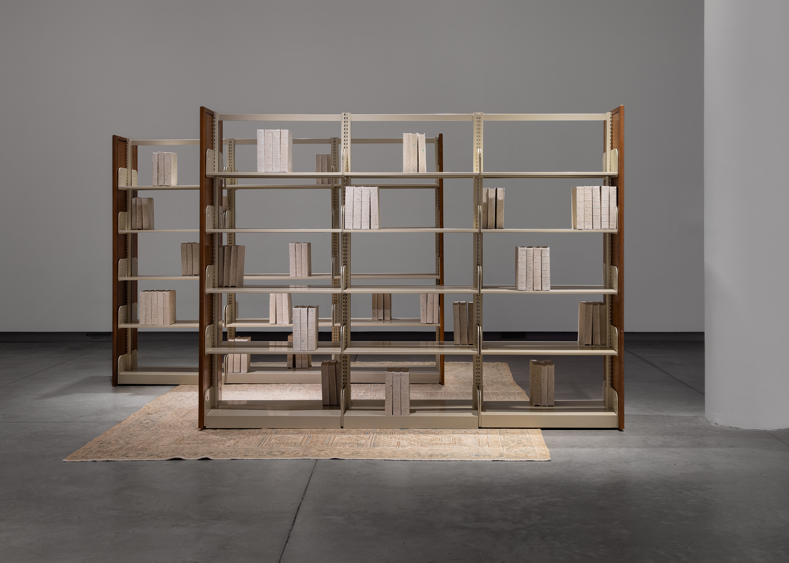
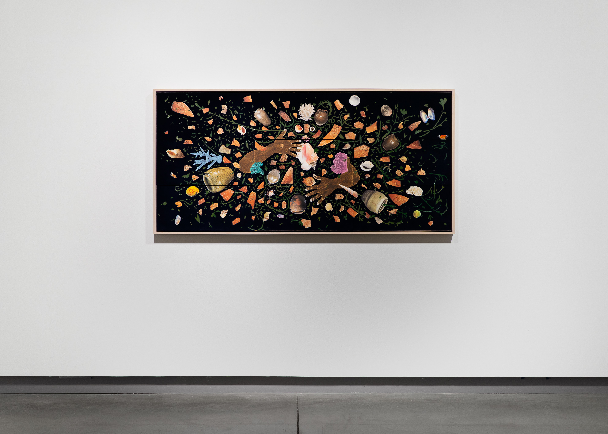
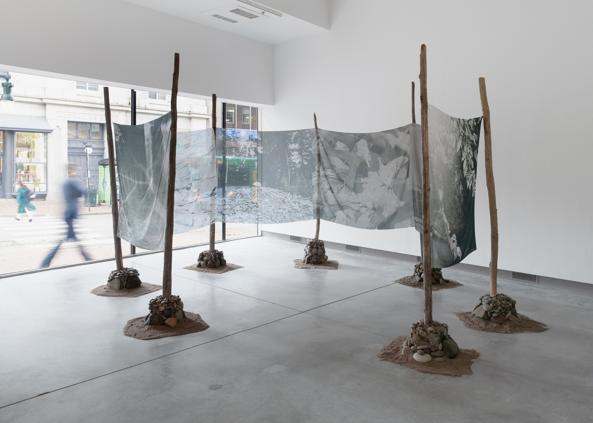

gallery

Samuel Levi Jones, The Library of Alexandria, 2023. Photography by Joel
Tsui.
Courtesy of the ICA at MECA&D

Sara Siestreem (Hanis Coos), this clam basket stops pipelines, 2022.
Photography by Joel Tsui. Courtesy of the ICA at MECA&D.

William Villalongo, A Dance for Dave, 2023. Photography by Joel Tsui.
Courtesy of the ICA at MECA&D

Maya Tihtiyas Attean (member of the Penobscot Nation),
Mikwidahamin/Portal, 2024. Photography by Joel Tsui. Courtesy of the ICA at
MECA&D